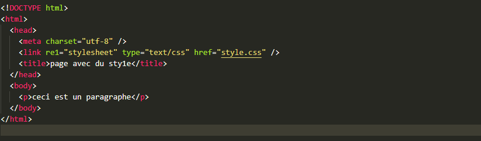
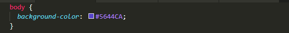
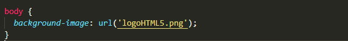
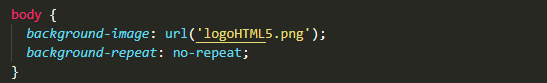
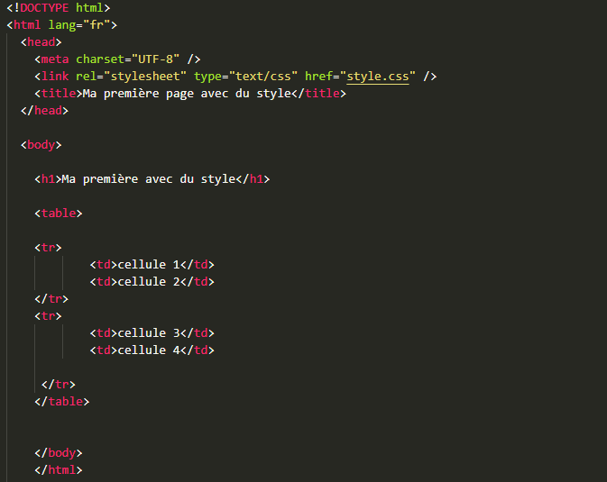
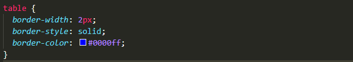
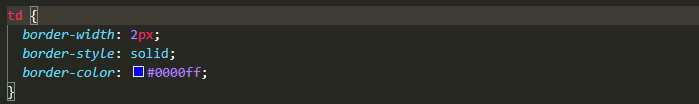
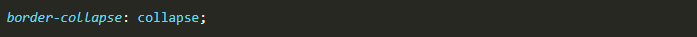
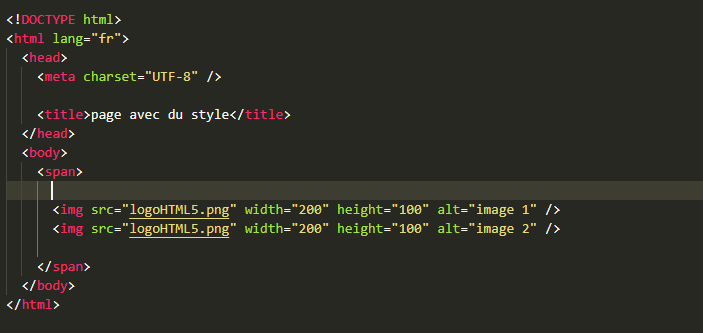
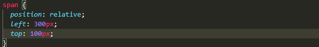

HTML5 ne permet pas de gérer autre chose que la structure de la page et les éléments qui la composent. Pour gérer l’esthétique de notre site, il faut utiliser un autre langage, complémentaire : le CSS (Cascading Style Sheets).
Pour intégrer un fichier .css à une page web .html, on utilise la balise orpheline <link /> qui dispose de 3 attributs :
Saisir le code suivant dans un nouveau fichier nommé "accueil.html".

Ouvrir un nouveau fichier dans un éditeur de texte. Saisir le code suivant :

Enregistrer ce nouveau fichier dans le même dossier que "accueil.html" en le nommant "style.css". Puis ouvrir "accueil.html" dans le navigateur. On constate que le texte compris entre les balises <p> et </p> est en bleu. Voilà à quoi sert le CSS ...
Pour revenir au code précédent, on a appliqué la propriété color. Par défaut cette couleur est noire. On peut spécifier cette couleur à l’aide d’un code hexadécimal par exemple. C’est une succession de 6 chiffres ou lettres (de a à f) précédée d’un #. Les 2 premiers caractères donnent la proportion de rouge dans la couleur, les 2 suivants la proportion de vert et les 2 derniers la proportion de bleu. On peut récupérer ces codes sur le site http://www.code-couleur.com par exemple.
Modifier la couleur du paragraphe précédent, les autres propriétés pour formater un texte sont :
| Type | Propriété | Valeurs Possibles |
| Taille | font-size | taille (en pixels) |
| Épaisseur | font-weight | bold (gras) ou normal |
| Style | font-style | italic ou normal |
| Police | font-family |
serif sans-serif monospace cursive fantasy |
| Alignement | text-align |
left right center justify |
Pour les cellules d’un tableau, il est possible de spécifier l’alignement avec la propriété vertical-align qui peut prendre comme valeurs : baseline (ligne de base du texte), top (en haut), baseline (en bas), middle (au milieu).
Modifier le fichier style.css précédent afin que le titre qui peut être « ma première page avec du style », encapsulé dans les balises <h1> </h1> soit centré, en rouge, en gras, de taille 30 pixels, avec la police fantasy. Le paragraphe doit être justifié, en gris, de taille 20 pixels, avec la police Cursive.
Il est possible de modifier l’apparence d’un élément de la page ou de toute la page. On peut spécifier par exemple une couleur ou une image de fond. Pour modifier la couleur de fond de toute la page, on utilise la propriété background-color et on lui attribue une couleur comme dans le paragraphe précédent. Dans le fichier style.css on a alors :

pour obtenir un joli fond bleu …
On peut aussi insérer une image en fond de page avec la propriété background-image. Il faut ensuite spécifier l’emplacement et le nom de l’image à l’aide de la valeur url.
Ainsi si on veut que l’image du logo HTML5 (téléchargeable ici) soit le fond d’écran de la page, on saisit :

Si l’image est d’une taille moins grande que celle de la page, elle se répète automatiquement. Pour éviter cela il faut spécifier no-repeat comme suit :

Pour fixer l’image de fond si on utilise les "ascenseurs", il faut le spécifier avec background-attachment : fixed ;. Enfin on peut préciser la position de l’image sur l’écran à l’aide de la propriété background-position dont la valeur peut être top, bottom, left, right ou center. Ce qu’on vient de découvrir peut également s’appliquer aux autres éléments de la page (h1, h2, …, p, header, footer, etc …).
Dans la partie HTML nous avons vu comment organiser les cellules d’un tableau. Nous allons voir ici comment lui dessiner des bordures. On peut reprendre le code html suivant dans un fichier "tableau.html" :

Dans le fichier "style.css", on peut saisir le code suivant :

Les propriétés border-width, border-style et border-color permettent respectivement de spécifier l’épaisseur des bordures (en pixels), le type de trait (solid pour plein, dotted pour pointillés, dached pour pointillés, double pour un trait double), et leur couleur. On constate que seules les bordures extérieures du tableau sont apparentes. On ajoute alors les lignes suivantes :

On constate maintenant que les bordures sont doublées … Pour les fusionner on ajoute la ligne suivante :

dans le style de "table" afin de fusionner toutes les bordures.
Le dernier type d’opérations que nous permet le CSS, c’est de pouvoir modifier la position des éléments sur la page.
CSS ne peut modifier que la position des éléments de type bloc comme par exemple <h>, <p>, <ul>, <ol>, <table>, <header>, <footer>, <div>.
Les éléments comme les liens, les images, les <input> ou encore les <span> ne sont pas des blocs. Ils sont dits en-ligne.
Heureusement il est possible de faire passer un élément de type bloc en élément de type en-ligne et vice- versa. Pour cela on utilise la propriété display à laquelle on attribue les valeurs bloc, inline ou même none (qui permet de ne pas afficher l’élément …).
Par défaut les éléments de type bloc sont disposés les uns au-dessous des autres dans l’ordre dans lequel ils ont été créés.
Les éléments de type en-ligne sont eux positionnés les uns à la suite des autres, en ligne, de gauche à droite, dans l’ordre dans lequel ils ont été créés.
Pour positionner un bloc sur la page, on utilise la propriété position qui peut prendre les valeurs fixed (ce qui signifie que le bloc reste à sa place même quand on utilise les "ascenseurs") ou relative, Dans ce cas, on peut spécifier la position du bloc par rapport aux blocs qui l’entourent à l’aide des propriétés left, right, top et bottom.
Si on veut par exemple placer 2 images du logo HTML5 l’une à côté de l’autre, chacune d’une hauteur de 100 pixels, la première de largeur 300 pixels et la deuxième de largeur 100 pixels, on peut par exemple saisir les codes suivants :


Ces 2 images seront placées à 300 pixels du bord gauche de l’écran et à 100 pixels du bord supérieur ou du bloc précédent s’il y en a un.